Nagareyama, Chiba: things to do, food and stays
Nagareyama · Chiba
Nagareyama
Highlighted on the Chiba map.
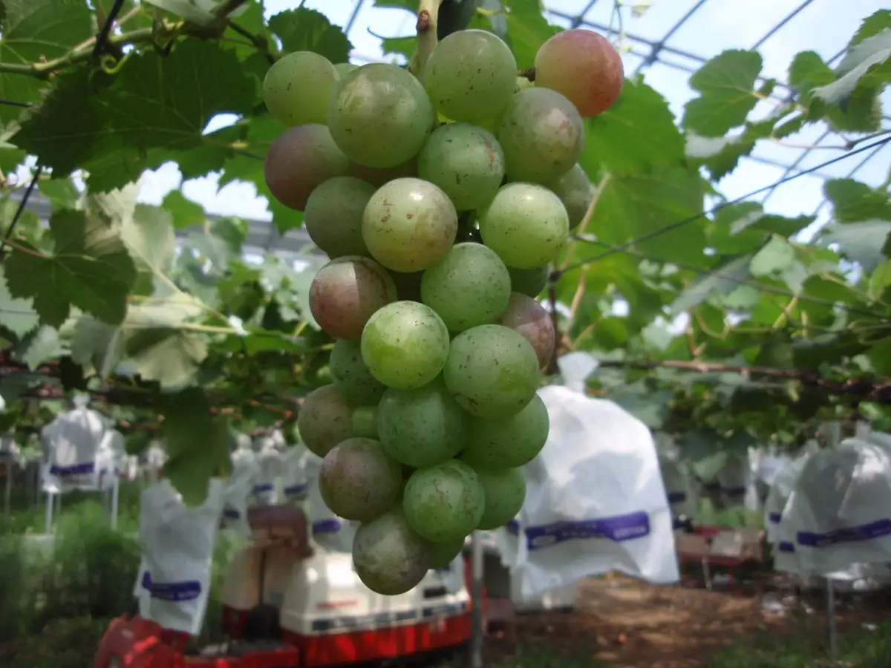
Stay
ホテルルミエールグランデ流山おおたかの森
Hotel Rumierugurande Nagareyama Otakano Mori
ReLA南流山
ReLA Nanryu Yama
Inn in Nanryuyama, Nagareyama with family-friendly stays; 3-minute walk from Nanryuyama Station.
東横ＩＮＮ流山おおたかの森駅前

Toyoko INN Nagareyama Otakano Mori Ekimae
Inn in Otakanomorinishi, Nagareyama with breakfast available.
Dining
The Noodles & Saloon Kiriya
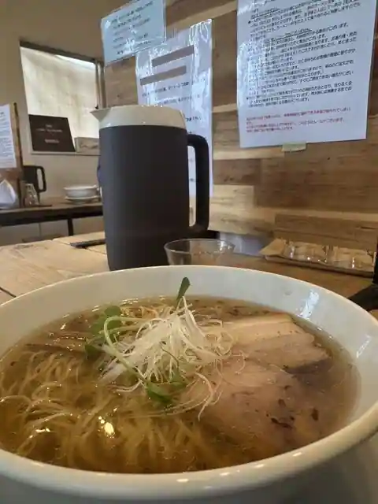
The Noodles & Saloon Kiriya
流山 すず季
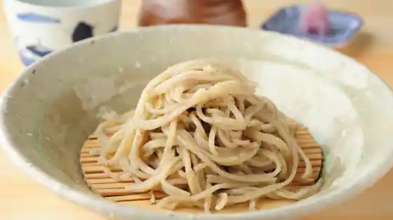
Nagareyama Suzu Ki
レタンプリュス 本店
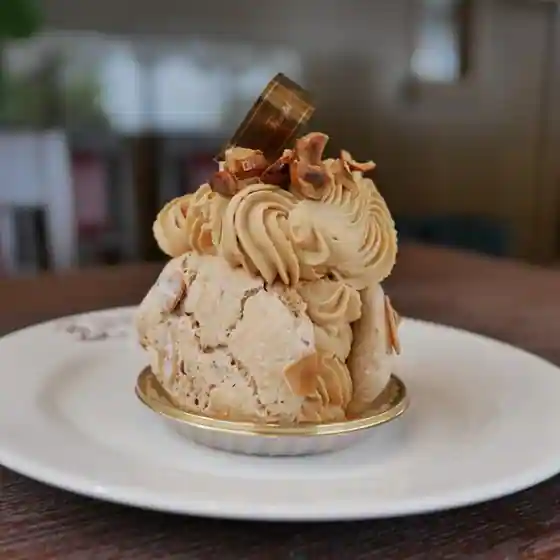
Retanpuryusu Hon
長八
Chohachi
かねき
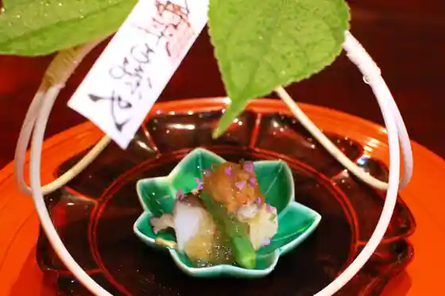
Kaneki
ひろしまや
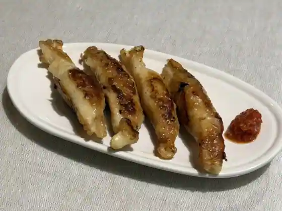
Hiroshimaya
黒澤惣三商店 別館
Kurosawa So San Sho Bekkan
江戸屋うなぎ店
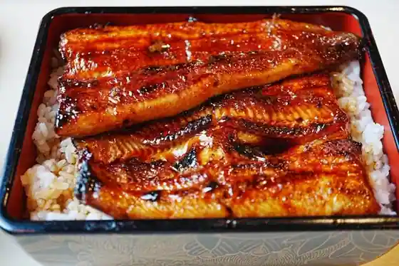
Edoya Unagi
鮨NOBU
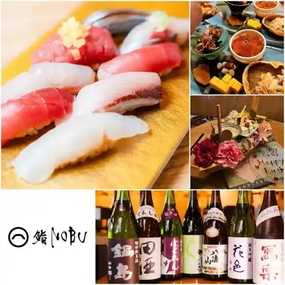
Sushi NOBU
肴と地酒 焼き鳥 房州炊き MEARI
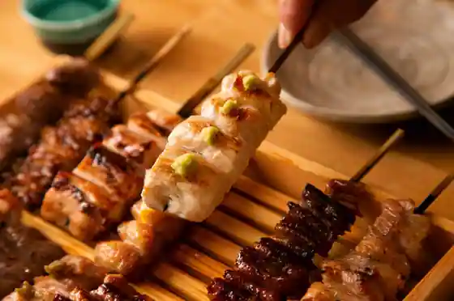
Sakana To Jizake Yakitori Boshu Taki MEARI
フルーツカフェ オレンジ
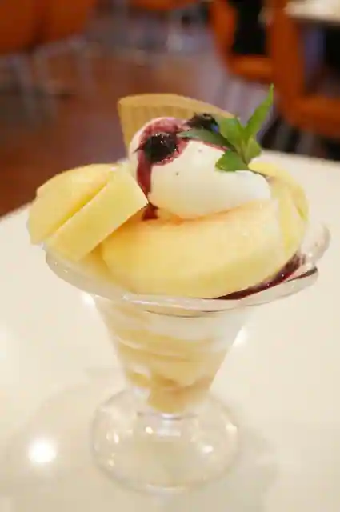
Furutsu Cafe Orenji
トロン
Toron
麺屋 空
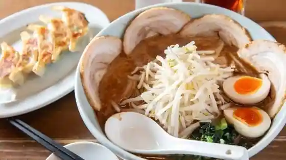
Men Ya Sora
ケンラボ
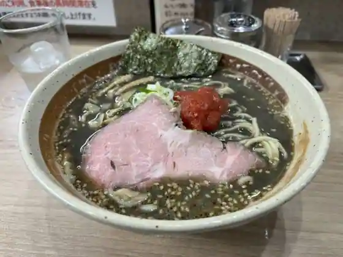
Kenrabo
南柏 旬の鮮魚と四季の地酒 すしの磯一
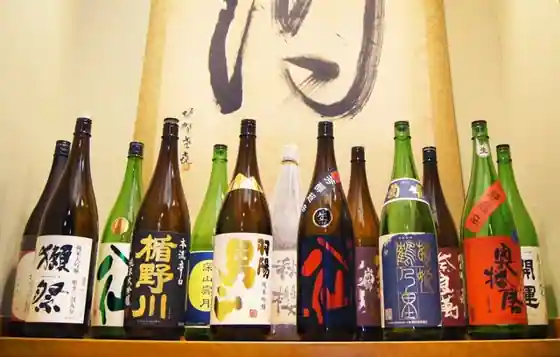
Minami Kashiwa Jun No Sengyo To Shiki No Jizake Sushino Iso Ichi
ビストロ ミナミンカゼ
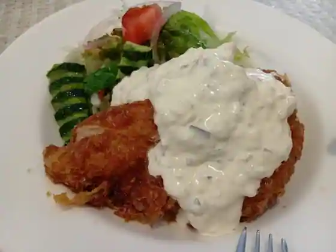
Bistro Minaminkaze
バンビーノ
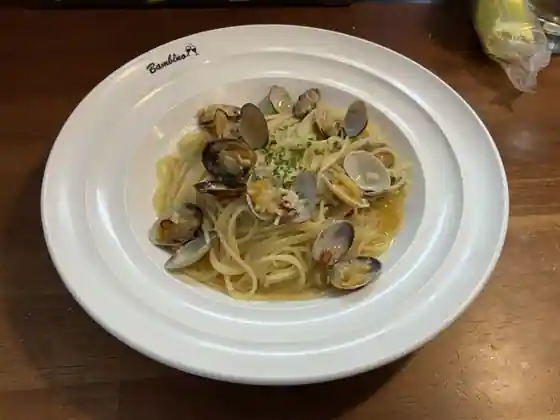
Banbino
エスプレッソ・ディー・ワークス 流山おおたかの森店
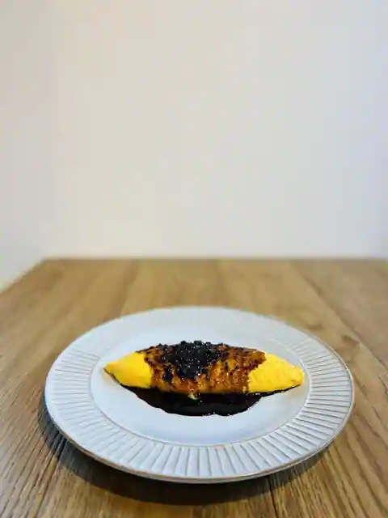
Esupuresso Di Wakusu Nagareyama Otakano Mori
蔵出・焼き芋 かいつか 流山おおたかの森店
Kura Shutsu Yaki Imo Kaitsuka Nagareyama Otakano Mori
148CAFE
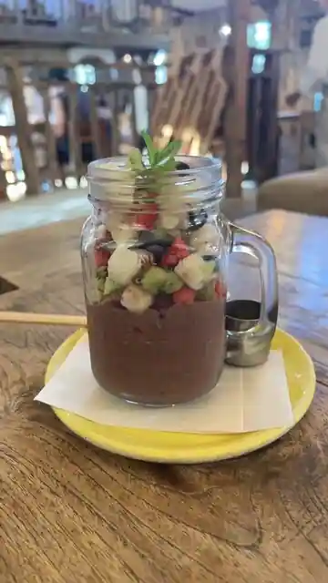
148CAFE
湯あがりキッチン 一休
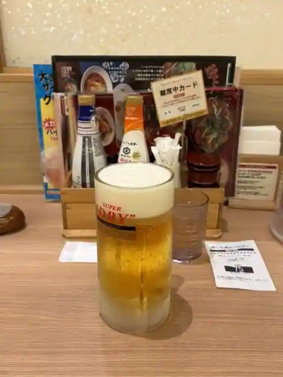
Yu Agari Kitchen Ikkyu
夜パフェBAR＆VIGO 流山おおたかの森店
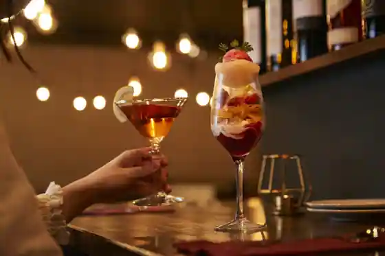
Yoru Pafe BAR&VIGO Nagareyama Otakano Mori
カレーの店 ボンベイ タカシマヤフードメゾンおおたかの森店
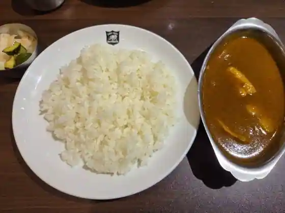
Kare No Bonbei Takashimayafudomezon Otakano Mori
さかなめし
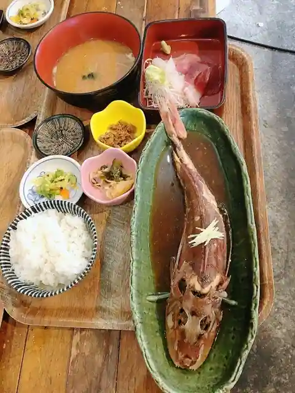
Sakanameshi
Sights
Ochado Garden Mizudai Orchard
Ryu Tetsu
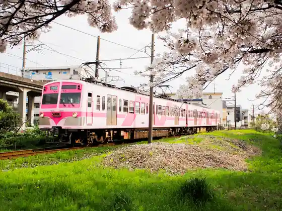
Shirami Rin Museum / Nagareyama
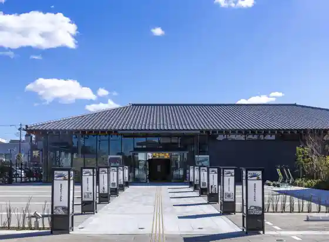
Nagareyama Mangekyo Gyararii & Museum
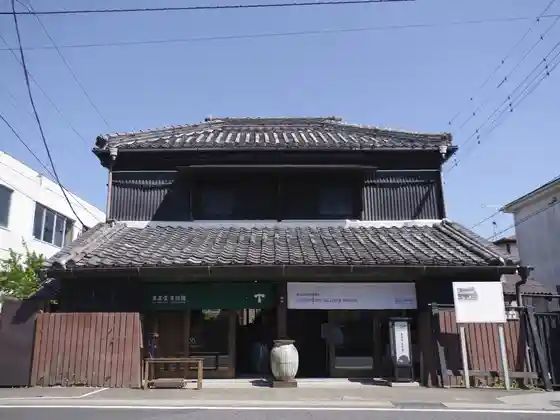
Unga Suihen Park
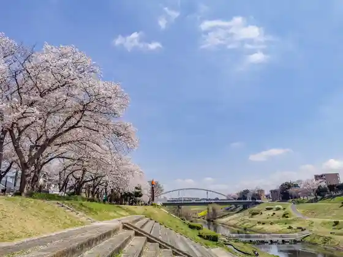
Issa Soju Memorial Museum
Akagi Shrine
Nagareyama Nosambutsu Chokubai Tokoro (Shinsen Shokumi)
Kondo Isami Jinya Ato
Asama Shrine
Osugi Shrine
Nagareyama Ritsu Museum
Nagareyama Hon Town Machinaka Museum
Okazaki Hatchomiso to Shirami Rin no Ajiwa I Koza / Nagareyama Shirami Rin Museum
Nitto Jozo Shirotamari Shikomi Koza / Nagareyama Shirami Rin Museum